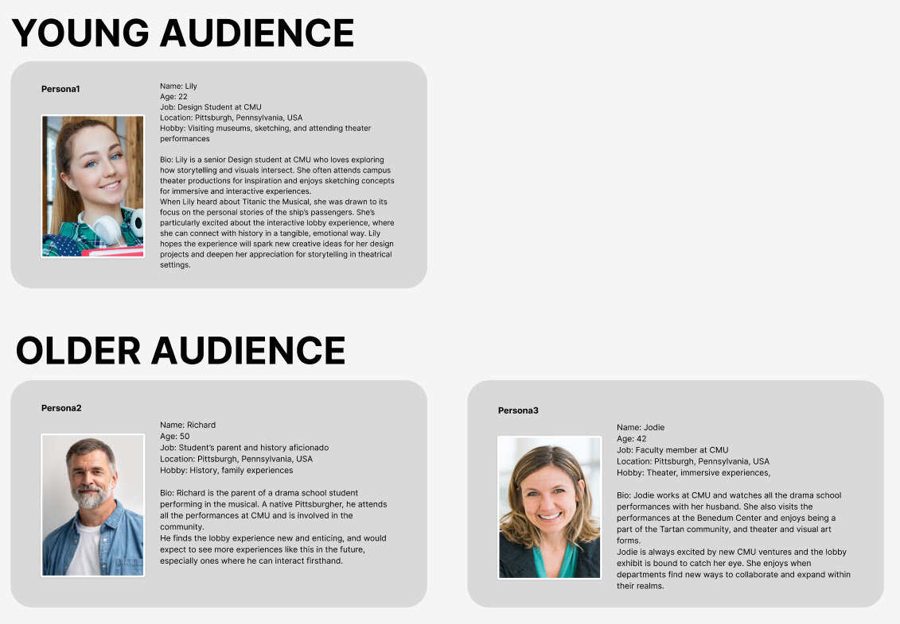
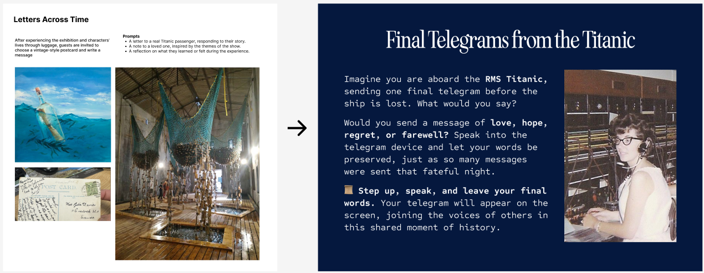

Create an interactive exhibit in the Purnell Center lobby to immerse guests into the world of Titanic using lighting, audio, and interactive set pieces and and prepare them for the musical.
This is an ongoing project and will be updated as work progresses.
Encore
Titanic the Musical pre-show experience for CMU's School of Drama
Currently working as an experience designer and narrative designer for a pre-show experience for CMU’s School of Drama production of Titanic the Musical, as part of a client project with CMU’s Entertainment Technology Center.
Overview
Concept
Exploring the lives and stories of the characters through their luggage. The musical represents
the
passengers
and their dreams and hopes for their future in America.
It focuses on the class disparities between
them -
the Third-Class immigrants dream of a better life in America, the Second Class imagine they too can join
the
lifestyles of the rich and famous, while the millionaire Barons of the First Class anticipate legacies
lasting
forever.
We also plan to make our experience change with time, during the run of the show.
- The beginning represents the passengers boarding the ship - bright and hopeful, with countless dreams.
- The intermission begins right after the ship hits the iceberg. We wanted a feeling of panic, danger, and a sense of rush.
- The show ends on a melancholic note, and there are accounts of passengers on lifeboats remembering the dark, starry sky they saw as the ship sank because they were in the middle of the sea on a moonless night. We wanted to replicate this and create a mood for introspection and quiet stillness.
We plan to change the lighting, visuals, and soundscapes through these three parts of the experience:
- We plan to have a bright and sunny pre-show, symbolising the luggage being boarded onto the ship, and the sounds of seagulls and shipyards.
- During the intermission, we plan to use ocean floor gobos and theatrical lighting to create a blue tinged effect, fog machines and cooling the room down, and harsh lighting to represent warning signals. The soundscape is going to be unsettling, with the ship creaking ominously, and water splashing precariously.
- Our post-show will be quiet and reflective, an almost dark stillness. We expect the audience to be quiet and thoughtful at the end of the performance, and want the environment to be eerily unsettling, and yet calm. The soundscape would be silent, either with no sound playing, or using noise-cancelling effects to make it more unsettling.
Challenges
- encouraging guests to touch and interact with the exhibit,
- creating user journeys that feel complete even if the guest misses one or two phases of the experience, and
- maintaining a strong narrative with lighting design for the one matinee show we have.

Quick User Journey - Interactions
As the user walks past a luggage station, a motion sensor detects their presence and the trunk opens, with a programmed light tracing the outlines of the props inside, encouraging them to interact with it. We would use directional speakers to play an audio recording of the character narrating, also triggered by the motion sensor. The guests can explore the props inside - rift through the characters' clothing, read their diaries and letters, examine their possessions, and thereby understand and empathise with their stories.

Progress - Experience Design
- Helped us finalize characters - Our client and us had different ideas on whether we should be using characters from the musical or shine the spotlight on ones that weren't featured. Building a user journey map made us understand how using new characters would distract the guests from both, our experience, as well as our clients, as they would expect to see these characters in the musical, and also exit during the intermission and search for an interesting character they had seen on stage.
- We wanted means to collect feedback and guage how immersed guests are without having to fill feedback forms. We thought of a hanging net of messages in bottles exhibit, where we got feedback that it was not period-accurate. We moved on to a postcard exhibit, as the ship was also a mailing ship, but faculty feedback told us that people would not really write a postcard. We then took inspiration from the ship's Marconi room, and made our own version of their telegram system, and took the liberty to make it voice-enabled.
- Playtesting this idea, we realised that guests would feel freer to talk if they knew what they said was anonymous, so we tried iterating different modifcations - messages appearing randomly, new ones showing up later, multiple existing messages, until we finally came up with wave-like visuals of messages flowing together, forming an ocean. These were only possible through user-reseach, playtesting, and frequest modifications and feedback sessions.

Role
experience designer and narrative designer on the project.
crafting user journeys and personas for our young and old audience, and making sure the experience feels complete even if they miss any or more of the three parts.
conducting extensive research into the characters' lives, who they were to others, and how they each spoke or wrote, and mimicing these to create stories for their journals, diaries, and pocketbooks.
creating a strong and engaging narrative for the whole experience, to ensure guests connect with these characters.
For the Entertainment Technology Center, I am designing our team's logo, poster, and half sheet, too.


This is an ongoing project and will be updated as work progresses.